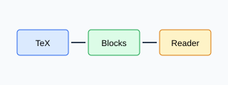

Introduction
We study a compact Bilin pipeline with a cited energy equation.
E=mc^2

A structured pipeline from source TeX to reading blocks.
Regression expectations for parser outputs.
Block
Expected
Paragraph
Stable hash